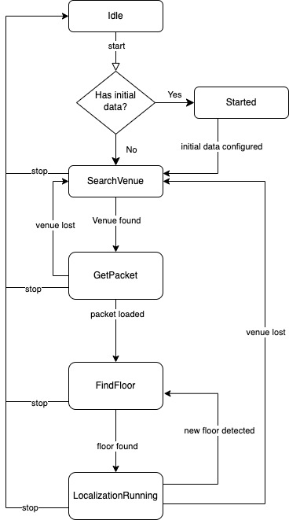

Start Localization
A full working example app is available for iOS and android. Run the MapActivity to see Nextome Sdk in action. It also contains a seamless outdoor/indoor map integration using OpenStreetMap for outdoor and Nextome Flutter Map for indoor.
Start localization
To start localization, call:
Background Mode
On Android, Nextome can also keep track of user indoor position while the phone screen is off or the app is in background. For more info, explore the corresponding section here.
Stop localization
When you've done, stop the localization by calling:
Observe SDK status
It's possible to observe the current state the Nextome SDK.
You can use this data to start initializing the map or showing messages to the users and update your UI accordingly.
Nextome SDK State
NextomeSdkState is a simple state machine that can have different states:

IdleState
Nextome SDK has been initialized but there is no active localization service running.
StartedState
Nextome has been correctly initialized and started, it's ready to scan beacons;
| Property | Description |
|---|---|
isOutdoor: Bool |
Will always be true in this state |
| Property | Description |
|---|---|
isOutdoor: Bool |
Will always be true in this state |
SearchVenueState
Nextome is currently scanning nearby beacons to determine in which venue the user is; If the SDK is stuck here, you're probably outdoor.
| Property | Description |
|---|---|
isOutdoor: Bool |
Will always be true in this state |
| Property | Description |
|---|---|
isOutdoor: Bool |
Will always be true in this state |
GetPacketState
Nextome knows the venue of the user and it's downloading from the server the associated resources (Maps, POIs, Patches...);
| Property | Description |
|---|---|
isOutdoor: Bool |
Will always be false in this state |
venueId: Int |
The venueId of the venue found |
| Property | Description |
|---|---|
isOutdoor: Bool |
Will always be false in this state |
venueId: Int32 |
The venueId of the venue found |
FindFloorState
All the venue resources have been downloaded. Nextome is now computing in which floor the user is;
| Property | Description |
|---|---|
isOutdoor: Bool |
Will always be false in this state |
venueId: Int |
The venueId of the venue found |
venueData: NextomeVenueData |
Contains all the resources (beacons, pois, maps, events, path and settings) for a specific venue. |
| Property | Description |
|---|---|
isOutdoor: Bool |
Will always be false in this state |
venueId: Int |
The venueId of the venue found |
venueData: NextomeVenueData |
Contains all the resources (beacons, pois, maps, events, path and settings) for a specific venue. |
LocalizationRunningState
Nextome SDK is computing user positions. You can observe live user location using the observer nextomeSdk.locationLiveData;
| Property | Description |
|---|---|
isOutdoor: Bool |
Will always be false in this state |
venueId: Int |
The venueId of the venue found |
venueData: NextomeVenueData |
Contains all the resources(beacons, pois, maps, events, path and settings) for a specific venue. |
mapId: Int |
Id of the map (floor) in which the user was localized |
tileZipPath: String |
The local path of the zip file which contains the tiles for the current map |
mapHeight: Int |
The height in pixel of the map |
mapWidth: Int |
The width in pixel of the map |
| Property | Description |
|---|---|
isOutdoor: Bool |
Will always be false in this state |
venueId: Int32 |
The venueId of the venue found |
venueData: NextomeVenueData |
Contains all the resources(beacons, pois, maps, events, path and settings) for a specific venue. |
mapId: Int32 |
Id of the map (floor) in which the user was localized |
tileZipPath: String |
The local path of the zip file which contains the tiles for the current map |
mapHeight: Int32 |
The height in pixel of the map |
mapWidth: Int32 |
The width in pixel of the map |
It is possible to use tileZipPath, mapHeight and mapWidth to show the user a live map of the current floor.
See more on Nextome Map integration docs.
Note
- If the user changes floor, the SDK will resume from
FIND_FLOORstate. - If the user goes outdoor, the SDK will switch to
SEARCH_VENUEstate until a new indoor beacon is detected.
Complete example
Example: getStateObservable()
nextomeSdk.getStateObservable().collect { state ->
when (state) {
is IdleState -> {
showOpenStreetMap()
updateState("Sdk is Idle")
}
is StartedState -> {
showOpenStreetMap()
updateState("Sdk Started")
}
is SearchVenueState -> {
showOpenStreetMap()
updateState("Searching Venue...")
}
is GetPacketState -> {
showOpenStreetMap()
updateState("Downloading venue ${state.venueId}...")
}
is FindFloorState -> {
showOpenStreetMap()
updateState("Finding current Floor on venue ${state.venueId}...")
}
is LocalizationRunningState -> {
updateState("Showing map of floor ${state.mapId}...")
showIndoorMap()
setIndoorMap(state.tilesZipPath,
state.mapHeight,
state.mapWidth,
state.venuePackage.getPoisByMapId(state.mapId)
)
poiList = state.venuePackage.allPois
}
is ErrorState -> {
handleError(state.exception)
}
}
}
Example: getStateObservable()
let watcher = nextomeSdk.getStateObservable().watch(){state in
guard let state = state else {return }
if state is IdleState{
self.showOpenStreetMap()
self.updateState(value: "Sdk is in Idle")
}else if state is StartedState{
self.showOpenStreetMap()
self.updateState(value: "Sdk is Started")
}else if state is SearchVenueState{
self.showOpenStreetMap()
self.updateState(value: "Sdk is searching for a venue")
}else if let getPacketState = state as? GetPacketState{
self.showOpenStreetMap()
self.updateState(value: "Downloading venue \(getPacketState.venueId)...")
}else if let findFloorState = state as? FindFloorState{
self.showOpenStreetMap()
self.updateState(value: "Finding current Floor on venue \(findFloorState.venueId)...")
}else if let runningState = state as? LocalizationRunningState{
self.showIndoorMap()
var mapPois = runningState.venuePackage.getPoisByMapId(mapId: runningState.mapId)
self.setIndoorMap(runningState.tilesZipPath,
runningState.mapHeight,
runningState.mapWidth,
mapPois)
var allPois = runningState.venuePackage.allPois
}
}
Observe the user position
Nextome SDK offers an observable to listen to user position updates:
NextomePosition
| Property | Description |
|---|---|
x: Double |
The x coordinates of the computed position. |
y: Double |
The y coordinates of the computed position. |
venueId: Int |
The venueId of the venue found. |
mapId: Int |
The mapId (floor) of the computed position. |
label: String? |
A label associated with the position (see label in additional features). |
| Property | Description |
|---|---|
x: Double |
The x coordinates of the computed position. |
y: Double |
The y coordinates of the computed position. |
venueId: Int32 |
The venueId of the venue found. |
mapId: Int32 |
The mapId (floor) of the computed position. |
label: String? |
A label associated with the position (see label in additional features). |
Observe errors
Nextome SDK uses different types of exceptions to report errors:
| Exception Type | Description |
|---|---|
GenericException |
A generic error happened. The SDK will continue to work normally. |
InvalidCredentialException |
Nextome SDK was started with invalid credentials. Create a new instance of Nextome SDK with valid credentials and try again. |
Critical Exception |
Nextome encountered a critical exception. It is necessary to start a new session to start localization again. |
It is possible to observe errors using getErrorsObservable():
nextomeSdk.getErrorsObservable().collect { error ->
Log.e(TAG, "New error received: ${error.message}")
when (error) {
is NextomeException.GenericException -> {
showMessageEvent(message = error.message)
}
is NextomeException.InvalidCredentialException -> {
logOutAndShowLoginScreen()
}
is NextomeException.CriticalException -> {
showMessageEvent(message = error.message)
// Need to restart sdk
}
}
}
let errorWatcher = nextomeSdk.getErrorsObservable().watch(block: {error in
guard let error = error else{
return
}
if error is NextomeException.InvalidCredentialException{
self.logoutAndShowLoginScreen()
}else if error is NextomeException.CriticalException{
self.showMessageEvent(message: error.message)
//Need to restart sdk
}else if error is NextomeException.GenericException {
self.showMessageEvent(message: error.message)
}
})
watchers.append(errorWatcher)
Next steps
-
Visit Background-service to learn how to use the SDK even when the app is not opened in the foreground.
-
Visit Nextome map integration if you want to use our library to display the indoor map.
Examples
A full working example app is available on iOS and android.
Run the MapActivity to see Nextome Sdk in action. It also contains a seamless outdoor/indoor map integration using OpenStreetMap for outdoor and Nextome Flutter Map for indoor.
© 2023 Nextome srl | All Rights Reserved.